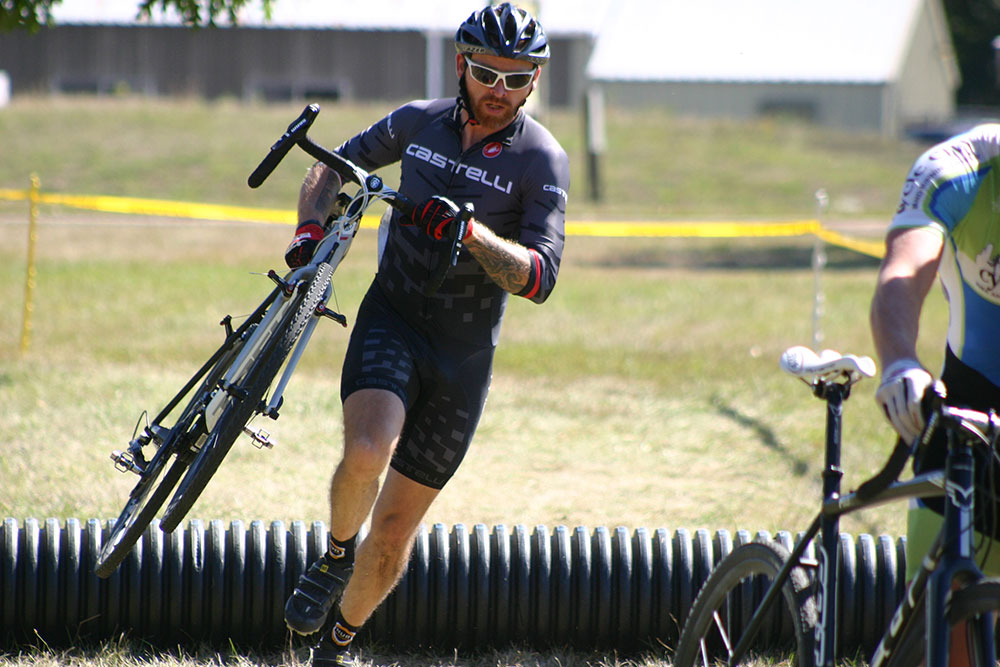

Wooden shoes are up for grabs again at the Dirty Wooden Shoe 'cross race. Race day registration opens at 9 a.m. and closes 15 minutes before each race.
Thanks to Peace Tree Brewing Co. each race entry recieves one free beer at the taproom in Knoxville.
Register for two races, by Sept. 5 and recieve a free t-shirt!
